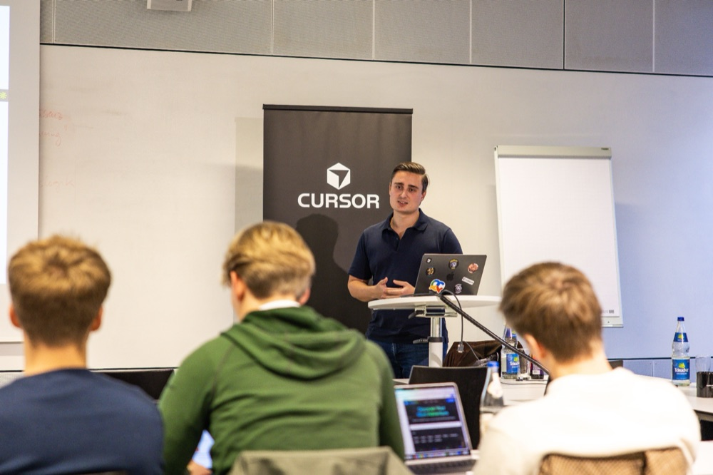

Cursor-WorkshopCursor workshop
Mit Philipp Angermann von Cursor: Live Vibe Coding, Code-Architektur und die Frage, welche Fähigkeiten bleiben, wenn AI besser wird. Kleine Teams bauten je ihre eigene Mensa-Bewertung.With Philipp Angermann from Cursor: live vibe coding, code architecture and which skills stay relevant as AI improves. Small teams each built their own Mensa food rating platform.